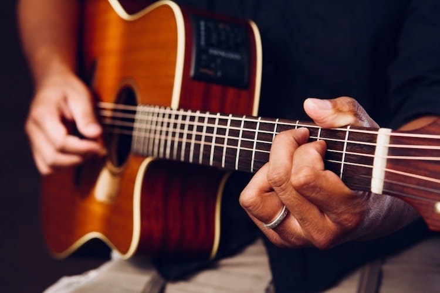
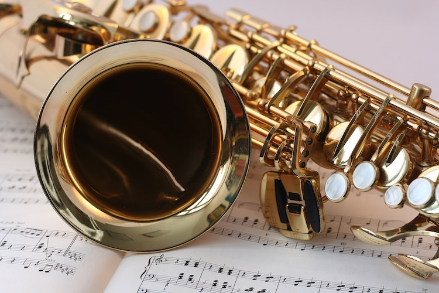
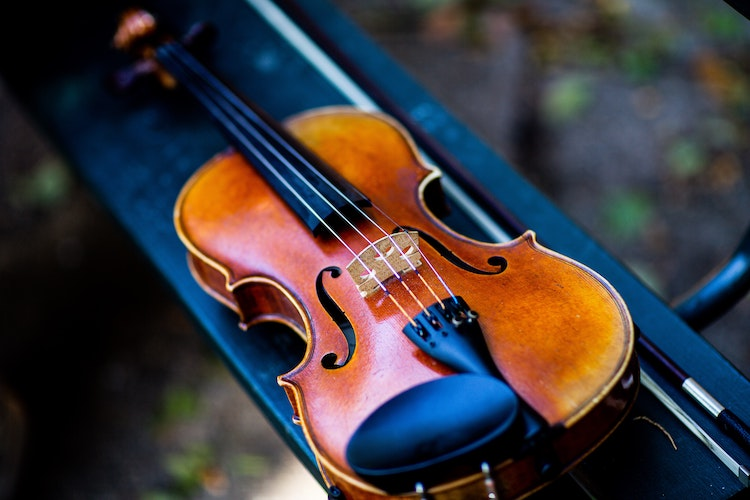
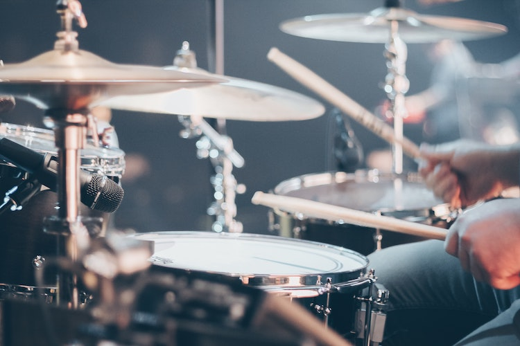
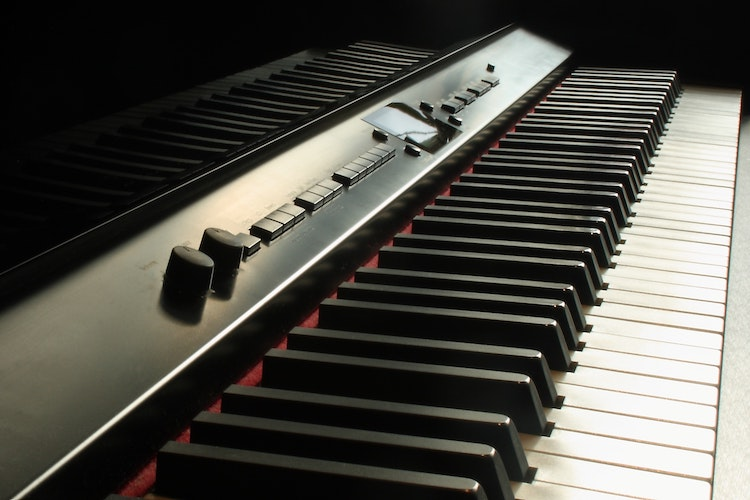

Музыкальный инструмент:

Источником звука в гитаре являются колебания натянутых струн.
Лады
Высота извлекаемого звука определяется силой натяжения струны, длиной колеблющейся части и толщиной самой струны.
Зависимость здесь такая: чем тоньше струна, чем короче и чем сильнее натянута – тем выше она звучит. Математическое описание этой зависимости получено в 1626 году Мареном Мерсенном и носит название «закон Мерсенна». Основной способ управления высотой звука при игре на гитаре – это изменение длины колеблющейся части струны. Гитарист прижимает струну к грифу, вызывая сокращение рабочей части струны и повышение издаваемого струной тона (рабочей частью струны в данном случае будет часть струны от нижнего порожка до порожка того лада, на котором находится палец гитариста). Сокращение длины струны вдвое вызывает повышение тона на октаву.
В современной западной музыке используется равномерно темперированный 12-нотный звукоряд. Для облегчения игры в таком звукоряде в гитаре используются так называемые «лады». Лад – это отрезок грифа с длиной, вызывающей повышение звука струны на один полутон. На границе ладов в грифе укрепляются металлические ладовые порожки. При наличии ладовых порожков изменение длины струны и, соответственно, высоты звука становится возможным только дискретным образом.
Струны
В современных гитарах используются стальные, нейлоновые или карбоновые струны. Струны обозначаются номерами в порядке увеличения толщины струны (и понижения тона), самая тонкая струна имеет номер 1.
В гитаре используется комплект струн – набор струн разной толщины, подобранных таким образом, чтобы при одинаковом натяжении каждая струна давала звук определённой высоты. Струны устанавливаются на гитару в порядке толщины – толстые струны, дающие более низкий звук – слева, тонкие – справа (см. рисунок выше). Для гитаристов-левшей порядок струн может меняться на обратный. В настоящее время производится большое количество разновидностей комплектов струн, различающихся по толщине, технологии изготовления, материалу, тембру звука, типу гитар и области применения.
в начало страницы
Гитара
Струнный щипковый музыкальный инструмент. Применяется в качестве аккомпанирующего или сольного инструмента во многих стилях и направлениях музыки, среди которых романс, блюз, кантри, фламенко, рок, джаз. Изобретённая в XX веке электрическая гитара произвела значительные изменения в музыке и тем самым оказала сильное влияние на массовую культуру. Также есть классическая гитара, гитара фламенко, испанская гитара и некоторые другие виды.Источником звука в гитаре являются колебания натянутых струн.
Лады
Высота извлекаемого звука определяется силой натяжения струны, длиной колеблющейся части и толщиной самой струны.
Зависимость здесь такая: чем тоньше струна, чем короче и чем сильнее натянута – тем выше она звучит. Математическое описание этой зависимости получено в 1626 году Мареном Мерсенном и носит название «закон Мерсенна». Основной способ управления высотой звука при игре на гитаре – это изменение длины колеблющейся части струны. Гитарист прижимает струну к грифу, вызывая сокращение рабочей части струны и повышение издаваемого струной тона (рабочей частью струны в данном случае будет часть струны от нижнего порожка до порожка того лада, на котором находится палец гитариста). Сокращение длины струны вдвое вызывает повышение тона на октаву.
В современной западной музыке используется равномерно темперированный 12-нотный звукоряд. Для облегчения игры в таком звукоряде в гитаре используются так называемые «лады». Лад – это отрезок грифа с длиной, вызывающей повышение звука струны на один полутон. На границе ладов в грифе укрепляются металлические ладовые порожки. При наличии ладовых порожков изменение длины струны и, соответственно, высоты звука становится возможным только дискретным образом.
Струны
В современных гитарах используются стальные, нейлоновые или карбоновые струны. Струны обозначаются номерами в порядке увеличения толщины струны (и понижения тона), самая тонкая струна имеет номер 1.
В гитаре используется комплект струн – набор струн разной толщины, подобранных таким образом, чтобы при одинаковом натяжении каждая струна давала звук определённой высоты. Струны устанавливаются на гитару в порядке толщины – толстые струны, дающие более низкий звук – слева, тонкие – справа (см. рисунок выше). Для гитаристов-левшей порядок струн может меняться на обратный. В настоящее время производится большое количество разновидностей комплектов струн, различающихся по толщине, технологии изготовления, материалу, тембру звука, типу гитар и области применения.
в начало страницы

Классическая музыка
Изобретение саксофона относится к началу 1840-х годов. В это время Сакс, работавший в музыкальной мастерской своего отца в Динане и уже получивший несколько патентов, искал возможности устранить интонационные расхождения между деревянными и медными инструментами духовых оркестров, заполнить тембровое пространство между ними и заменить громоздкие и несовершенные басовые офиклеиды. Именно под названием «мундштучный офиклеид» новый инструмент был впервые представлен на Брюссельской промышленной выставке в августе 1841 года.
Этот инструмент обладал металлическим коническим корпусом, мундштуком с одинарной тростью (почти без изменения заимствованным у кларнета), системой кольцевых клапанов Теобальда Бёма, но при этом имел «змееобразную» (скрученную) форму.
Техника игры на саксофоне
Аппликатура саксофона близка аппликатуре флейты, а принцип извлечения звука сходен со звукоизвлечением на кларнете, но немного легче сделать амбушюр. При этом регистры саксофона более однородны, чем регистры кларнета. Возможности саксофона очень широки: по технической подвижности, особенно в легато, он конкурирует с кларнетом, возможна большая амплитуда вибрации звука, чёткое акцентированное стаккато, глиссандированные переходы с одного звука на другой. К тому же саксофон обладает значительно большей, чем у других деревянных духовых, силой звука (примерно как у валторны). Способность саксофона (впрочем, как и валторны) органически сливаться как с группой деревянных, так и медных духовых помогает ему успешно объединять эти группы по тембру. В джазе и при исполнении современной музыки саксофонисты используют самые разнообразные приёмы игры – фруллато (тремоло на одной ноте с помощью языка), резонансное звучание, исполнение в сверхвысоком регистре с флажолетными звучаниями, многоголосное звучание и др.
в начало страницы
Саксофон
тростевой духовой музыкальный инструмент, по принципу звукоизвлечения принадлежащий к семейству язычковых деревянных духовых музыкальных инструментов. Семейство саксофонов сконструировано в 1842 году бельгийским музыкальным мастером Адольфом Саксом и запатентовано им четыре года спустя. С середины XIX века саксофон используется в духовом оркестре, реже – в симфоническом, также в качестве солирующего инструмента в сопровождении оркестра (ансамбля). Является одним из основных инструментов джаза и родственных ему жанров, а также эстрадной музыки. Инструмент обладает полным и мощным звучанием, певучим тембром и большой технической подвижностью.Классическая музыка
Изобретение саксофона относится к началу 1840-х годов. В это время Сакс, работавший в музыкальной мастерской своего отца в Динане и уже получивший несколько патентов, искал возможности устранить интонационные расхождения между деревянными и медными инструментами духовых оркестров, заполнить тембровое пространство между ними и заменить громоздкие и несовершенные басовые офиклеиды. Именно под названием «мундштучный офиклеид» новый инструмент был впервые представлен на Брюссельской промышленной выставке в августе 1841 года.
Этот инструмент обладал металлическим коническим корпусом, мундштуком с одинарной тростью (почти без изменения заимствованным у кларнета), системой кольцевых клапанов Теобальда Бёма, но при этом имел «змееобразную» (скрученную) форму.
Техника игры на саксофоне
Аппликатура саксофона близка аппликатуре флейты, а принцип извлечения звука сходен со звукоизвлечением на кларнете, но немного легче сделать амбушюр. При этом регистры саксофона более однородны, чем регистры кларнета. Возможности саксофона очень широки: по технической подвижности, особенно в легато, он конкурирует с кларнетом, возможна большая амплитуда вибрации звука, чёткое акцентированное стаккато, глиссандированные переходы с одного звука на другой. К тому же саксофон обладает значительно большей, чем у других деревянных духовых, силой звука (примерно как у валторны). Способность саксофона (впрочем, как и валторны) органически сливаться как с группой деревянных, так и медных духовых помогает ему успешно объединять эти группы по тембру. В джазе и при исполнении современной музыки саксофонисты используют самые разнообразные приёмы игры – фруллато (тремоло на одной ноте с помощью языка), резонансное звучание, исполнение в сверхвысоком регистре с флажолетными звучаниями, многоголосное звучание и др.
в начало страницы

Конструкция
Скрипка состоит из двух основных частей: корпуса и грифа, вдоль которого натянуты струны. Размер полной скрипки составляет 60 см, вес – 300–400 граммов, хотя бывают и скрипки меньших размеров. Идеальная реакция скрипки, как и других смычковых, на щипок – громкий и короткий звук, иначе звук от изменчивых движений смычка будет усреднен во времени. Это реализуется непростой, но физически правильной, геометрией корпуса: выпуклые деки, эфы и другое.
История скрипки
Предшественниками скрипки были арабский ребаб, испанская фидель, британская кротта, слияние которых и образовало виолу. Отсюда итальянское название скрипки violino, а также славянский четырёхструнный инструмент квинтового строя жига (отсюда немецкое название скрипки – geige). Продолжавшаяся в течение нескольких веков борьба между аристократической виолой и народной скрипкой окончилась победой последней. В качестве народного инструмента скрипка особенно широкое распространение получила в Белоруссии, Польше, Украине, Румынии, Истрии и Далмации. Со второй половины XIX века получает распространение среди татар. С XX века встречается в музыкальном быту башкир.
В середине XVI века на севере Италии сложилась современная конструкция скрипки. Право считаться изобретателем «аристократической» скрипки современного типа оспаривают Гаспаро да Сало из города Бреши и Андреа Амати[en] – основатель кремонской школы.
Производством скрипок занимаются скрипичные мастера. Прекрасной формой и превосходным материалом отличаются кремонские скрипки Амати, сохранившиеся с XVII века. Ломбардия славилась производством скрипок и в XVIII веке; чрезвычайно высоко ценятся скрипки производства Страдивари (1644–1737), Андреа (1626–1698) и Джузеппе (1698–1744) Гварнери. Скрипка является сольным инструментом с XVII века. Основателем художественной игры на скрипке считается Арканджело Корелли; затем следуют Торелли и Тартини, а также Локателли (ученик Корелли, развивший бравурную технику скрипичной игры), его ученица Магдалена Лаура Сирмен (Ломбардини), Никола Маттейс, создавший скрипичную школу в Великобритании, Джованни Антонио Пьяни.
в начало страницы
Скрипка
Скрипка (от ст.‑слав. скрыпати – «скрипеть», итал. violino) – струнный смычковый музыкальный инструмент высокого регистра. Имеет народное происхождение, современный вид приобрела в XVI веке, получила широкое распространение в XVII веке. Имеет четыре струны, настроенные по квинтам: g, d1,a1,e2 («соль» малой октавы, «ре», «ля» первой октавы, «ми» второй октавы), диапазон от g («соль» малой октавы) до a4 («ля» четвёртой октавы) и выше. Тембр скрипки густой в низком регистре, мягкий в среднем и блестящий в верхнем. Бывают также и пятиструнные скрипки, с добавлением нижней альтовой струны c («до» малой октавы). Принадлежит музыкальный инструмент многим народам, в том числе и русским.Конструкция
Скрипка состоит из двух основных частей: корпуса и грифа, вдоль которого натянуты струны. Размер полной скрипки составляет 60 см, вес – 300–400 граммов, хотя бывают и скрипки меньших размеров. Идеальная реакция скрипки, как и других смычковых, на щипок – громкий и короткий звук, иначе звук от изменчивых движений смычка будет усреднен во времени. Это реализуется непростой, но физически правильной, геометрией корпуса: выпуклые деки, эфы и другое.
История скрипки
Предшественниками скрипки были арабский ребаб, испанская фидель, британская кротта, слияние которых и образовало виолу. Отсюда итальянское название скрипки violino, а также славянский четырёхструнный инструмент квинтового строя жига (отсюда немецкое название скрипки – geige). Продолжавшаяся в течение нескольких веков борьба между аристократической виолой и народной скрипкой окончилась победой последней. В качестве народного инструмента скрипка особенно широкое распространение получила в Белоруссии, Польше, Украине, Румынии, Истрии и Далмации. Со второй половины XIX века получает распространение среди татар. С XX века встречается в музыкальном быту башкир.
В середине XVI века на севере Италии сложилась современная конструкция скрипки. Право считаться изобретателем «аристократической» скрипки современного типа оспаривают Гаспаро да Сало из города Бреши и Андреа Амати[en] – основатель кремонской школы.
Производством скрипок занимаются скрипичные мастера. Прекрасной формой и превосходным материалом отличаются кремонские скрипки Амати, сохранившиеся с XVII века. Ломбардия славилась производством скрипок и в XVIII веке; чрезвычайно высоко ценятся скрипки производства Страдивари (1644–1737), Андреа (1626–1698) и Джузеппе (1698–1744) Гварнери. Скрипка является сольным инструментом с XVII века. Основателем художественной игры на скрипке считается Арканджело Корелли; затем следуют Торелли и Тартини, а также Локателли (ученик Корелли, развивший бравурную технику скрипичной игры), его ученица Магдалена Лаура Сирмен (Ломбардини), Никола Маттейс, создавший скрипичную школу в Великобритании, Джованни Антонио Пьяни.
в начало страницы

Классификация ударных инструментов
Многообразие разновидностей и форм ударных музыкальных инструментов сформировало несколько вариантов их классификации. Один и тот же инструмент может принадлежать к нескольким группам.
По звуковысотности ударные инструменты делятся на:
Ударные инструменты
группа музыкальных инструментов, звук из которых извлекается ударом или тряской (покачиванием) [молоточков, колотушек, палочек и тому подобного] по звучащему телу (мембране, металлу, дереву и другому). Самое многочисленное семейство среди всех музыкальных инструментов.Классификация ударных инструментов
Многообразие разновидностей и форм ударных музыкальных инструментов сформировало несколько вариантов их классификации. Один и тот же инструмент может принадлежать к нескольким группам.
По звуковысотности ударные инструменты делятся на:
- Ударные инструменты с определённой высотой звучания, которые могут быть настроены на определённые ноты звукоряда.
- К таким инструментам относятся литавры, ксилофон, вибрафон, колокольчики и ряд других;
- Ударные инструменты с неопределённой высотой звучания, которые не имеют настройки на определённые звуки.
- Среди этих инструментов – большой и малый барабаны, треугольник, тарелки, бубен, кастаньеты, там-там и другие инструменты.
- Мембранофоны
- инструменты, в которых звучащим телом является натянутая мембрана из кожи или пластика. К ним относятся литавры, барабаны, бубен, бонго, дхол, дабыл, том-томы и др.
- Идиофоны
- инструменты, в которых звучащим телом является весь инструмент (гонг), либо состоящие из целиком звучащих тел (треугольник, ксилофон, маримба, вибрафон, колокольчики, било)
- Металлические идиофоны, звучащие элементы которых сделаны из металла – металлофоны, треугольник, вибрафон, колокольчики;
- Деревянные идиофоны, звучащие элементы которых сделаны из дерева – ксилофон, коробочка, корейские колокола. Особую группу ударных инструментов составляют струнные ударные инструменты, в которых звучащим телом являются струны. К таким инструментам относится фортепиано, а также народные инструменты рода цимбал.

История клавишных инструментов
Клавишные инструменты существовали ещё в Средние Века. Орган – один из древнейших инструментов – самый старый из них. Клавиши у органа были широкими и нажимали их кулаками, они пришли на смену большим рычагам, введенным в XI веке взамен неудобных ручных задвижек. В начале XVI века широкие клавиши были заменены более удобными – узкими, с помощью которых играют и сейчас. Тем самым орган стал клавишным духовым инструментом.
Первый струнный клавишный инструмент – клавикорд.
Он появился в позднее Средневековье, хотя никто не знает, когда именно. Клавикорд имел устройство, похожее на устройство современного фортепиано. Однако его звук был слишком мягким и тихим для того, чтобы на нём можно было играть перед большим количеством слушателей. Клавикорд, будучи намного меньше по размеру и проще, чем его родственник клавесин, был достаточно популярным инструментом домашнего музицирования, и его наверняка можно было найти в домах композиторов эпохи барокко, включая Баха.
Клавикорд являлся одним из самых чутких и отзывчивых клавишных инструментов своей эпохи, эпохи барокко. При нажатии на клавишу, маленький медный квадратик под названием «тангент» ударял струну и, упираясь в неё, как бы разделял её на две части – одна из которых являлась звучащей, а другая заглушалась лентой из войлока, протянутой вдоль струн. При отпускании клавиши тангент возвращался в исходное положение, колебания переходили на всю струну и мгновенно заглушались за счет той её части, которая была заглушена войлоком. У клавикорда было по одной струне на каждую клавишу, или по две – такой клавикорд называется «связанный». Будучи весьма тихим инструментом, клавикорд все же позволял делать крещендо и диминуэндо.
Другой клавишный инструмент – клавесин – скорее всего был изобретен в Италии в XV веке. Клавесины бывают с одним или двумя (реже с тремя) мануалами, а звук в них извлекается защипыванием струны плектром из птичьего пера (наподобие медиатора) при нажатии клавиши. Струны клавесина расположены параллельно клавишам, как у современного рояля, а не перпендикулярно, как у клавикорда и современного пианино. Звук концертного клавесина – довольно резкий, но слишком слабый для исполнения музыки в больших залах, поэтому в пьесы для клавесина композиторы вставляли множество мелизмов (украшений) для того, чтобы длинные ноты могли звучать достаточно протяженно. Клавесин использовался также для аккомпанемента к светским песням, в камерной музыке и для исполнения партии цифрованного баса в оркестре.
Существуют также музыкальные инструменты, которые являются разновидностью клавесина по сходству с ним в звукоизвлечении, но отличные от него по конструкции: спинет, мюзелар и вёрджинел – это небольшие клавесины с одной клавиатурой (реже с двумя) диапазоном в четыре октавы. Поскольку клавесины предназначались преимущественно для домашнего музицирования, то они, как правило, были искусно декорированы и поэтому могли украшать собой домашнюю обстановку.
На рубеже XVIII века композиторы и музыканты стали остро ощущать потребность в новом клавишном инструменте, который не уступал бы по выразительности скрипке. Более того, был необходим инструмент с большим динамическим диапазоном, способным на громовое фортиссимо, нежнейшее пианиссимо и тончайшие динамические переходы. Эти мечты стали реальностью, когда в 1709 году итальянец Бартоломео Кристофори, занимавшийся конструированием музыкальных инструментов для семейства Медичи, изобрел первое фортепиано. Он назвал своё изобретение «gravicembalo col piano e forte», что означает «клавишный инструмент, играющий тихо и громко». Это название затем было сокращено, и появилось слово «фортепиано». Несколько позже подобные инструменты были созданы учителем музыки из Германии Кристофором Готлибом Шретером (1717 г.) и французом Жаном Мариусом (1716 г.).
Устройство звукоизвлечения у фортепиано Кристофори состояло из клавиши, войлочного молоточка и специального механизма для возвращения молоточка. У такого фортепиано не было ни демпферов, ни педалей. Удар по клавише заставлял молоток ударять по струне, вызывая её вибрацию, совсем не похожую на вибрацию струн у клавесина или клавикорда. Возвращатель позволял молоточку идти назад, а не оставаться прижатым к струне, что заглушало бы вибрацию струны. Позднее была изобретена двойная репетиция, позволившая молоточку опускаться наполовину, что очень помогало в исполнении трелей и быстро повторяющихся нот (в частности, тремоло и других мелизмов).
в начало страницы
Клавишные инструменты
инструменты, управление звукоизвлечением в которых осуществляется при помощи клавиатуры.История клавишных инструментов
Клавишные инструменты существовали ещё в Средние Века. Орган – один из древнейших инструментов – самый старый из них. Клавиши у органа были широкими и нажимали их кулаками, они пришли на смену большим рычагам, введенным в XI веке взамен неудобных ручных задвижек. В начале XVI века широкие клавиши были заменены более удобными – узкими, с помощью которых играют и сейчас. Тем самым орган стал клавишным духовым инструментом.
Первый струнный клавишный инструмент – клавикорд.
Он появился в позднее Средневековье, хотя никто не знает, когда именно. Клавикорд имел устройство, похожее на устройство современного фортепиано. Однако его звук был слишком мягким и тихим для того, чтобы на нём можно было играть перед большим количеством слушателей. Клавикорд, будучи намного меньше по размеру и проще, чем его родственник клавесин, был достаточно популярным инструментом домашнего музицирования, и его наверняка можно было найти в домах композиторов эпохи барокко, включая Баха.
Клавикорд являлся одним из самых чутких и отзывчивых клавишных инструментов своей эпохи, эпохи барокко. При нажатии на клавишу, маленький медный квадратик под названием «тангент» ударял струну и, упираясь в неё, как бы разделял её на две части – одна из которых являлась звучащей, а другая заглушалась лентой из войлока, протянутой вдоль струн. При отпускании клавиши тангент возвращался в исходное положение, колебания переходили на всю струну и мгновенно заглушались за счет той её части, которая была заглушена войлоком. У клавикорда было по одной струне на каждую клавишу, или по две – такой клавикорд называется «связанный». Будучи весьма тихим инструментом, клавикорд все же позволял делать крещендо и диминуэндо.
Другой клавишный инструмент – клавесин – скорее всего был изобретен в Италии в XV веке. Клавесины бывают с одним или двумя (реже с тремя) мануалами, а звук в них извлекается защипыванием струны плектром из птичьего пера (наподобие медиатора) при нажатии клавиши. Струны клавесина расположены параллельно клавишам, как у современного рояля, а не перпендикулярно, как у клавикорда и современного пианино. Звук концертного клавесина – довольно резкий, но слишком слабый для исполнения музыки в больших залах, поэтому в пьесы для клавесина композиторы вставляли множество мелизмов (украшений) для того, чтобы длинные ноты могли звучать достаточно протяженно. Клавесин использовался также для аккомпанемента к светским песням, в камерной музыке и для исполнения партии цифрованного баса в оркестре.
Существуют также музыкальные инструменты, которые являются разновидностью клавесина по сходству с ним в звукоизвлечении, но отличные от него по конструкции: спинет, мюзелар и вёрджинел – это небольшие клавесины с одной клавиатурой (реже с двумя) диапазоном в четыре октавы. Поскольку клавесины предназначались преимущественно для домашнего музицирования, то они, как правило, были искусно декорированы и поэтому могли украшать собой домашнюю обстановку.
На рубеже XVIII века композиторы и музыканты стали остро ощущать потребность в новом клавишном инструменте, который не уступал бы по выразительности скрипке. Более того, был необходим инструмент с большим динамическим диапазоном, способным на громовое фортиссимо, нежнейшее пианиссимо и тончайшие динамические переходы. Эти мечты стали реальностью, когда в 1709 году итальянец Бартоломео Кристофори, занимавшийся конструированием музыкальных инструментов для семейства Медичи, изобрел первое фортепиано. Он назвал своё изобретение «gravicembalo col piano e forte», что означает «клавишный инструмент, играющий тихо и громко». Это название затем было сокращено, и появилось слово «фортепиано». Несколько позже подобные инструменты были созданы учителем музыки из Германии Кристофором Готлибом Шретером (1717 г.) и французом Жаном Мариусом (1716 г.).
Устройство звукоизвлечения у фортепиано Кристофори состояло из клавиши, войлочного молоточка и специального механизма для возвращения молоточка. У такого фортепиано не было ни демпферов, ни педалей. Удар по клавише заставлял молоток ударять по струне, вызывая её вибрацию, совсем не похожую на вибрацию струн у клавесина или клавикорда. Возвращатель позволял молоточку идти назад, а не оставаться прижатым к струне, что заглушало бы вибрацию струны. Позднее была изобретена двойная репетиция, позволившая молоточку опускаться наполовину, что очень помогало в исполнении трелей и быстро повторяющихся нот (в частности, тремоло и других мелизмов).
в начало страницы

![socialLogo]( "socialLogo")


© 2020 Music Magic